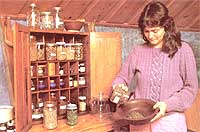
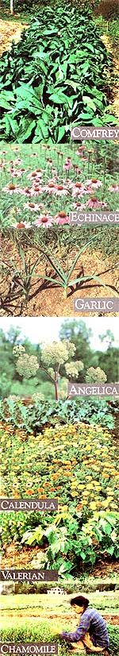

"These plants are food, spiritual food, and they are medicine."-Black Elk
When we learned that Olivia Abel-one of the gardeners at MOTHER's Eco-Village-kept an entire supply of homegrown herbs to treat her family's common ailments, we were so intrigued that we asked her to share some of her herbal expertise. Here, then, is Part I of a two-part article, which we hope you will find as informative and useful as we have.
When I feel a cold coming on . . . or my little boy is hyperactive and needs soothing . . . or my husband has a muscle spasm in his neck, I go to my medicine cabinet and pick out the herbal remedy that will help my family back on the road to health. I find this very satisfying . . . primarily, of course, because it works. The herbal remedies I use have helped-and continue to help-my family.
My homemade treatments also provide me with another important satisfaction: I know their source. And, in the realm of herbs, this point isn't to be taken lightly. Many of the pesticides that have been outlawed in America are exported to Third World countries. There, they are sprayed on crops and herbs that we, in turn, import (and a majority of the herbs sold in our nation's stores do come from such countries). When you take an herb medicinally, you often ingest large doses of that plant, so it's vitally important to make sure the herb was not grown with the help of toxic chemicals. And the best way to do so is to grow it yourself.
You can put together an herbal medicine chest that will meet most of your family's common health-care needs by growing and drying approximately 20 herbs (some of which you'd probably raise for cooking purposes anyway). However, to make getting started in this endeavor easier, I'm going to focus on only seven of my favorite medicinal herbs.
And don't be put off by the suspicion that the process will be too difficult and timeconsuming. It isn't! If you harvest these herbs at the right time and dry and store them properly, they'll have a shelf life of up to two years. What's more, if you use these plants to make your own tinctures and salves, they'll last even longer. [EDITOR'S NOTE: Olivia will describe how to make herbal tinctures and salves in Part II of this article.]
It's most important to always harvest herbs at the time that the particular plant segment you're after is at the peak of its medicinal power. Here are the general guidelines you should follow:
Leaves and stems: Pick these parts before the plant flowers. Do it in the morning after the dew has dried but before the sun has a chance to evaporate any of the plant's oils. (During our western North Carolina summers, that's usually around 10:00 A.M.)
Flowers: Harvest them before they reach full bloom and at the same time of morning as you'd gather leaves and stems.
Fruits and berries: Gather them at peak ripeness.
Roots and rhizomes: Dig these in the fall as the leaves start to change color, just after the plants' sap has returned to the ground.
Barks and twigs: Collect them in the spring as the first leaves appear and the plants' sap is rising.
A lot of herbs won't need washing, especially if they're organically grown and are not dirty. (Roots, of course, should be carefully washed.) If you're going to use just the leaves, hang the whole plant upside down in a dry, shady, well-ventilated place. If you're using roots, barks, or stems, chop the pieces thinly and place them on screens so they'll get plenty of air. Roots that don't contain volatile oils can go in a solar drier or in direct sunlight; however, those with volatile oils must be dried out of the sun.
In my house, I dry with the gas oven-using the racks already there and leaving just the pilot light on and the door partly open-and in my bathroom. The bathroom has a huge skylight and heats up quickly, so I place the herbs on long, screened racks on top of the bathtub, and I crack the skylight. Either way, most herbs take three or four days to dry fully (a few will get done in less time).
Herbs should be bottled immediately after drying, to prevent any loss of medicinal essences. To keep volatile oils from escaping, use glass, not plastic, containers with tightfitting lids. (The more I use herbs for healing, the more convinced I become that such care is truly necessary. That's another reason to grow your own: to ensure that they're properly harvested, dried, and stored.) Store your herbs in a spot that's away from direct sunlight and intense heat.
Now, you're all set . . . except for one thing: Which herbs do you want on your shelf? I'll share my seven favorites here-the ones that I use the most, that have been easiest for me to grow, and that I can no longer even imagine being without.
If I could grow only one medicinal herb, comdrey (Symphytum officinale) would be it. Both the leaves and, roots have numerous uses. Comfrey can be used internally or externally, and it's so easy to grow that many gardeners regard it as a pest!
This herb is a vulnerary, which means it helps wounds heal by encouraging cell growth and repair. I've used it on everything from surface wounds to-taken internally-hernias. After I tore my perineum during childbirth, I made a poultice of steamed comfrey leaves and set it on the tear. I have friends who wrap lightly steamed leaves in gauze and wrap that bandage around burned areas. (Keep burn dressings moist and regularly changed.) I even use it on bee stings: Just chew up part of a leaf-the masticating and the saliva will help activate the plant's healing enzymes-and put it on the affected area of the skin.
To take comfrey internally, you can make a hot tea (heat approximately one ounce of leaves in a pint of water) or "green juice." For the latter, mix four to five young leaves in a blender with pineapple juice until you get a deep green concoction; then swig it down. I drank a blenderful a day of green juice when I wanted to heal my perineum. (Remember, though, to imbibe comfrey drinks only for medicinal purposes. Extensive drinking may lead to esophageal or stomach cancer.)
Comfrey is also a demulcent (it soothes damaged or inflamed tissues, such as ulcers). Furthermore, a strong tea made from the roots can serve as an anticatarrhal (something that helps eliminate or prevent the accumulation of mucus) . . . can soothe asthma, whooping cough, and other lung ailments . . . and can help stop hemorrhaging.
While you can grow comfrey from seed or mail-ordered nursery plants, it takes little effort and no expense to propagate it by root division. Just cut a clump of roots from a neighbor's plant, and transplant it. Comfrey grows well in sun or shade, although it does prefer a moist area. Don't raise it in the middle of your garden, and never rototill it-it'll spread so much it may take over!
This is definitely my second favorite healing herb. It's the best herbal blood purifier (it cleans out toxins in the blood), is an excellent antibiotic (it fights infections), and is a good stimulant (it increases body energy). I use it mostly as a general antibiotic whenever I have an infection and when I need to fight colds, sore throats, and flu germs.
Use the root of the plant. Many herbalists make a strong tea from some ground root (one source suggests steeping a teaspoon of dried root to one cup of water) and drink it as often as necessary to relieve their symptoms. I like to store my echinacea in tincture form (a concentrated mixture of alcohol and herb). Then if I feel a cold coming on, I take one-half dropperful (about one-sixteenth of a teaspoon) as needed to rid myself of the cold before it becomes a problem. In acute stages, I'll take a half dropperful eveiy two hours for two days and then twice a day for two weeks. The only times it hasn't worked for me have been when I've failed to take enough doses. (Echinacea has no known toxicity level, although if you take a lot, you may experience slight dizziness or nausea.)
Echinacea is sold by many seed companies as a flower. (It's sometimes called purple coneflower or black sampson.) In my experience, it doesn't grow readily from seed. It's easier to buy plants. You can grow either Echinacea purpurea or E. angustifolia, although I've heard the latter has greater medicinal properties.
This herb is a remedy for almost anything! Garlic's an antibiotic, a blood purifier, an antiseptic (something applied to the skin to prevent bacterial growth), an expectorant (it helps expel mucus from the lungs and throat), a stimulant, a diaphoretic (it induces sweating), an antispasmodic, a nervine (calms nervous tension), a carminative (relieves gas and bowel pains), and a vulnerary. It can even destroy parasites in the digestive tract . . . help heal lung ailments . . . and counter both high and low blood pressure.
Don't boil garlic or it will lose its medicinal properties. Using it fresh is best. I simply munch on a clove when I want to avoid a cold. (Admittedly, this remedy does make my husband, Walker, tend to avoid me!) You can eat a clove a day to help lower high blood pressure. And when I need an expectorant, I crush cloves in just a bit of water . . . simmer the liquid gently to make steam . . . and put my nose-under a towel "tent"-over the vapors.
I've recently discovered Michael Tierra's recipe for garlic oil-it's in his book, The Way of Herbs (Pocketbooks, 1983). To make this healing liquid, put eight ounces of peeled and minced garlic, and enough olive oil to cover the herb, in a wide-mouthed jar. Close the jar tightly, put it in a warm place, and shake it several times a day for three days. Then press and strain the oil through unbleached muslin or cotton cloth . . . and store it in a cool place. Take one teaspoon of oil a day for colds, flus, fevers, and infectious diseases. For earaches, insert a few drops into the affected ear with a wad of cotton. And rub the oil directly onto the skin to ease aches and sprains.
Garlic is easy to grow, but-at least here in North Carolina-it takes almost a full year to mature. We plant ours before the ground freezes-anytime in August or September. We sow the biggest and best of our stockpiled cloves (growing-tip up, two inches deep and six inches apart) in raised, double-dug beds. (We also compact the soil just a tad with a board right before we plant. All alliumsgarlic's botanical name is Allium sativum like that.)
Garlic prefers a sunny, sandy, moist location. The green tips start to die back and turn brown sometime in July. Harvest the cloves when that happens or they'll begin to rot or to send forth lots of little buds from the ground, which will weaken the parent plant. Dry the bulbs out of direct sunlight on racks where they get adequate ventilation.
According to Michael Tierra, angelica (Angelica archangelica) improves the circulation and thus warms the body, so it's one of the best herbs to use if you tend to feel cold in winter. In addition, angelica relieves spasms and gas in the stomach and intestines (which makes it a carminative). It's also beneficial for coughs, colds, pleurisy, and all lung diseases. Those who drink more alcohol than they should will find that a regular intake of angelica creates a distaste for drinking. Last, Alan Chadwick (the founder of biodynamic/ French intensive gardening) recommended angelica tea as an excellent herb for mental uplift.
On the other hand, angelica is a strong emmenagogue (it promotes menstruation), so it should not be used by pregnant women. And since it tends to increase the sugar level in the bloodstream, diabetics should not take it, either.
I often use the angelica root in tincture form (remember, I'll tell you all about making tinctures next issue) to help stengthen my lungs and improve my mental faculties. You can make an infusion (a tea made by steeping, not boiling) of angelica by pouring a pint of boiling water over one ounce of bruised root. (Make any infusion in a tightly closed, nonmetallic container, letting it steep for ten to twenty minutes.) Take two tablespoons of that, three to four times a day, to relieve gas. Alternatively, you can drink the tea for several days when your heart, lungs, skin, stomach, or intestines could use a tonic. Or you can make a poultice of leaves to help relieve rheumatism.
I enjoy watching the foliage and flowers on this plant as it grows. It's best to watch it carefully, though, because once it does flower and start to set seed, the root will begin to rot, so you must harvest it quickly.
You can keep an angelica plant in your garden for several years by cutting back the flower stalks. Or you can let it mature and selfseed, and then transplant the little babies if necessary. This is easier than starting angelica seeds, because they're viable for only a short period. If you want to sow your own plants' seeds, do it almost immediately after harvesting. The seeds need light to germinate, so press them gently into the earth but don't cover them. Angelica loves a rich, moist soil and a spot that provides a little shade. Incidentally, this plant attracts a lot of beneficial predatory insects to your garden.
Valerian (Valeriana officinalis) is my favorite sedative. I make a tincture from the root and feed it to my little boy whenever he's hyperactive, or when he can't sleep because of a cold. It works quickly. I like to drink valerian tea to help me relax during my menstrual period. (Don't boil the root when making a tea-make an infusion instead.) It really helps promote sleep and lessen pain.
I was unaware that valerian has antispasmodic properties until someone mentioned them to me. Shortly after, they were put to the test. I had a friend who had such severe muscle spasms that he wanted to go to an emergency room. When he started taking some valerian tincture, his pain subsided almost immediately.
I also worked several months with a gardener who had epilepsy. He used some of my valerian tincture . . . and during the entire time I worked with him, I never saw him have a seizure. After that, I read in Mrs. M. Grieve's A Modern Herbal (Dover, 1971) that valerian is, indeed, used as an anticonvulsant. She also says it strengthens eyesight, especially when vision has been weakened by the optic nerve's lack of energy.
A couple of words of caution: Very rarely, valerian will stimulate-not soothe-someone, in which case that person's enzymes are not changing the herb's essential oil into valerianic acid (which has the calming effect). In addition, I read in The Rodale Herb Book (Rodale, 1974) that if taken too frequently or in excess, valerian can cause "headaches, spasmodic movements, or hallucinations." (I've never experienced any of those problems, though.)
I've had no difficulty growing valerian from seed, and after the first year that it flowers, there are plenty of easy-to-transplant little seedlings within wind range. If you do have trouble starting valerian from seed, find someone who has some plants. They'll most likely either have extra seedlings or need to divide their main plants (this should be done every third year). If need be, you can order one plant, let it grow, and transplant its selfsown seedlings.
Valerian plants do best when spaced about 15 inches apart. They are perennial, so plan to replace the ones you dig up for their roots. The herb should do well in all soils but prefers a rich, loamy seedbed.
This is a wonderfully delicate, almost applescented plant-one I delight in growing. I'll be describing German chamomile (Matricaria chamomilla), the annual. This grows taller, flowers more, and spreads more easily than Roman chamomile (Anthemis nobilis), a lowgrowing perennial. Both share similar medicinal properties, though.
Many people know of chamomile as a sedative and nervine-a tea to drink when you're restless or upset. It can help the insomniac face the night, it relieves pain, and it's a safe treatment for children's colds, nervous disorders, and indigestion. (My little one doesn't ever resist drinking this tea, since Peter Rabbit drank it when he got sick.)
You can make chamomile tea by steeping one-quarter ounce of flowers in a pint of boiled water for ten minutes. I prefer the stronger effect derived from using one ounce of chamomile pet pint of water. (You can make a tincture of it, as well.) The flowers are the only part of the plant you use. Externally, you can apply a hot compress (by soaking a cloth in the tea) to sore joints and muscles and other aches and swellings.
Chamomile tea can also be used to relieve menstrual cramps. It should not be drunk by any pregnant woman, as it it often used to induce menstruation. (It's certainly not as strong an emmenagogue as angelica, pennyroyal, black cohosh, or tansy, but you should take no chances.)
Chamomile isn't difficult to grow. As a matter of fact, ours continually self-sows and comes up in the pathways between our beds. The simplest way to establish plants is to gently press the seeds into the soil (they need light in order to germinate) after all danger of frost is past . . . leaving about four to five inches between each one. The seeds will probably not be viable unless they're subjected to an annual freezing and thawing cycle (which happens in our garden).
Once the plants flower, harvest a large number of blooms, but allow some to set seed. Blooms can be somewhat tedious to harvest, although I've learned to speed up the process and eliminate any cleaning by just pinching the flowers off between my nails into a very clean basket.
Calendula officinalis (also known as pot marigold) doesn't get the recognition it deserves. As with chamomile, you use only the flower heads. Calendula is an antiseptic and a vulnerary, and it's also an astringent, which means it can be used to stop hemorrhages and secretions and to treat swollen tonsils or hemorrhoids. You can use a hot tea to induce sweating (when you want to work a fever out of your system), to soothe ulcers and cramps, and to help heal skin eruptions. Make the beverage by infusing one ounce of herb in one pint of water.
Externally, calendula will help stop bleeding and promote healing of wounds. (It's often used in poultices.) You can also use calendula oil externally-as you would the poultice-or for earaches, as you would garlic oil. (Make calendula oil by soaking two ounces of flowers in one pint of olive or sesame oil'for three days and then straining the liquid before bottling it.)
Calendula is a pretty plant to grow and it attracts a lot of helpful insects to the garden. It's an annual, and you can get a jump on the season if you start your seeds in the greenhouse (the soil temperature must be at least 60°F). Later, set your transplants out nine to ten inches apart.
To get the purest medicinal part of the plant, you should pull and use only the petals of each flower. I've not done that so far-I have so little time as it is! To compensate, I increase the proportion of the herb in any mixture I'm making. If you do dry just the petals, put them on a paper towel or they may stick to your drying screen.
The herbs described above form my basic medicine chest, but that's not to say that I rely solely on herbs: Modern medicine has its place. I certainly don't try to mend broken bones, sew up my own wounds, or do any kind of surgery. But I do use my herbs more and more. Because of this I haven't had to go to a doctor in the last five years except for pregnancy and emergencies.
As you learn more about herbs, you'll realize that a lot of culinary herbs can be used medicinally, as well, and that some of your worst garden weeds can be your best healing friends. Maybe we can pursue some of these together later on. Remember, though, whenever you use an herb, do it with love, respect, and thanks for that part of nature that can help us to better help ourselves.
If you have any questions, I highly recommend consulting Michael Tierra's book The Way of Herbs. [EDITOR'S NOTE: You can order The Way of Herbs for $4.95 plus 75 cents shipping and handling from Simon & Schuster, Mail-Order Department, 1230 Avenue of the Americas, New York, NY 10020.]It's the only book I've found that assumes you know very little about using herbs, so it's therefore extremely informative. Michael's also better than most other herb writers at giving specific formulas and dosages. He is a practicing herbalist in California and has used what he tells about in his book.
EDITOR'S NOTE: The herbal remedies in this article should not be used as substitutes for professional medical attention for any serious health disturbance or for any chronic warning symptoms. When in doubt, consult your physician.
From The Way of Herbs, by Michael Tierra, copyright© 1983 by Michael Tierra. Reprinted by permission of Pocketbooks, Inc.
The following general advice is excerpted from the very useful chapter "Cautionary Notes on Herb Use" in Michael Tierra's The Way of Herbs. Specific cautions for the seven herbs discussed in the accompanying article are given in the article itself.
When properly used, herbs are the safest and surest medicines available However, one must be well aware of the power of herbs both to heal and, if misused, to cause imbalance. Herbs produce no side effects when used in the amounts required to effect a cure. Negative effects occur only when one fails to observe the cautions that herbalists have recognized after many years of experience.
The Food and Drug Administration has surveyed some of the available literature on chemical composition and pharmacology of herbs and has suggested that some herbs, commonly used as herbal medicines, are "unsafe. "However, it must be realized that these herbs were not judged unsafe on the basis of proper usage, but only based on the presence of a known toxic substance or on the report of severe overdose reaction. Virtually all foods and medicines contain substances that are toxic in large enough doses, so this does not shed much light on the true toxicity of the herb ....
In addition, by extracting ingredients from some herbs and feeding very large doses to laboratory animals, tumors have been induced in these animals. These substances are very weak carcinogenic agents and there is no evidence that the use of the herb itself is at all a health threat. Among the herbs which have been shown to contain a weak carcinogen are sassafras, nutmeg, cloves, basil, and tarragon.
When giving herbal remedies to children, the dosage should be decreased. As a general rule, the dose should follow the body weight, so that a forty-pound child would get no more than half the dose of an eighty pound child. The doses recommended in this book are the adult doses, representing a body weight of about 150 pounds for purposes of calculation. Therefore, women weighing less than 150 pounds, for example, should begin with a lower dosage. When treating very young children, only the very mild herbs should be used, such as lemon balm and catnip. [ED ITOR'S NOTE: The doses suggested in Olivia's article are also adult'doses.]
Here are some good sources for the herbsmentioned in this article:
The Sandy Mush Herb Nursery, Rt. 2, Surrett Cove Rd., Leicester, NC 28748 (catalog $2.00, refundable with order)
Rutland of Kentucky, P.O. Box 182, Washington, KY 41096 (catalog $2.00)
Sunnybrook Farms Nursery, 9448 Mayfield Rd., P.O. Box 6, Chesterland, OH 44026 (catalog $1.00, refundable with order)
Taylor's Herb Gardens, 1535 Lone Oak Rd., Vista, CA 92083 (catalog $1.00)
Nichols Garden Nursery, 1190 N. Pacific Hwy., Albany, OR 97321 (cata log free)
|
 Staff Photos |
 |
|